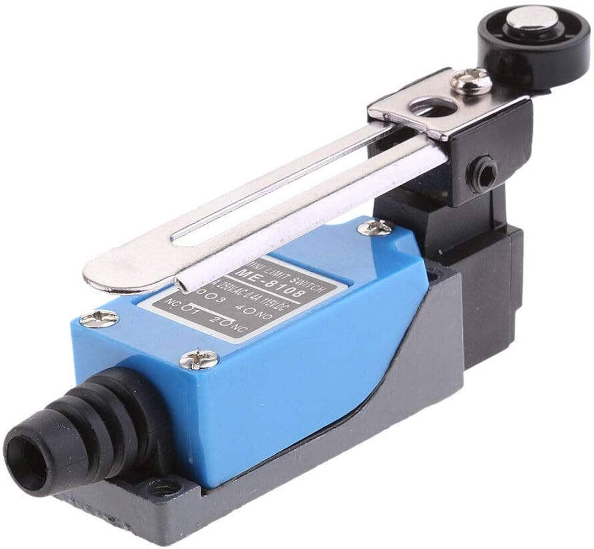
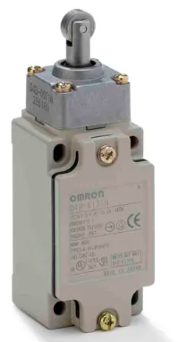
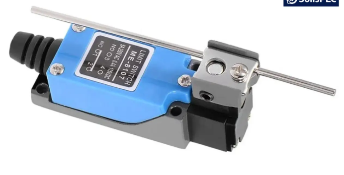

What is a Limit Switch?
A limit switch is an electromechanical switch that is operated by the physical movement or position of a machine part. It is used to detect the presence, absence, or end position of an object.
Examples: Elevator systems, CNC machines, conveyor belts, automatic doors.
Working Principle
- A limit switch has an actuator (lever, roller, plunger, or whisker) and internal contacts.
- When a moving object touches the actuator:
- The actuator moves.
- Internal contacts change state (NO closes / NC opens).
- A signal is sent to stop, start, or reverse a machine.
- When the object moves away:
- The actuator returns to its normal position using a spring.
- Contacts return to their original state.
Based on Actuator Type
- Plunger type: Direct push. 
- Roller lever type: Smooth operation, less wear.

- Lever type: Detects movement from side. 